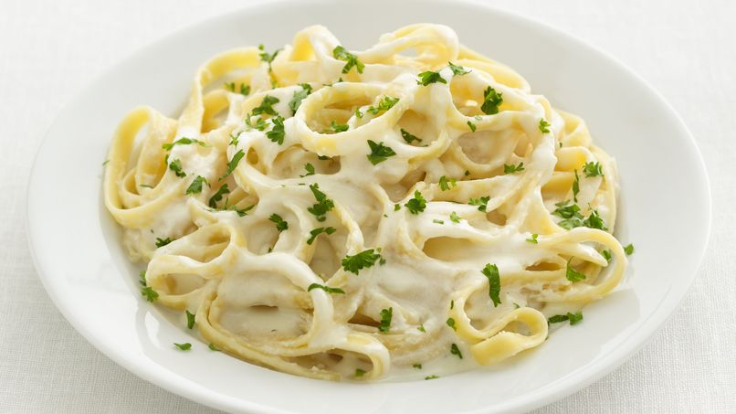

Spaguetti en Salsa Alfredo

Ingredientes:
- 1 paquete de spaguetti
- 1 taza de leche evaporada para cocinar
- Jamón
- Pimienta
- 1 brócoli
- Aceite para cocinar
- Margarina para cocinar
- Orégano molido o en hojas
- Queso parmesano o molido (puede usar queso para pizza también)
Preparación:
- Cortar el brócoli en trocitos; lavar bien y cocinar en agua hirviendo por 5 mins
- Cocinar el spaguetti en la misma agua del brócoli hasta que se suavice (aproximadamente 5 mins). Luego, sacarlo de la olla y pasarlo por agua fría
- Derretir una cucharada de margarina junto con el aceite en un sartén
- Cortar el jamón en trocitos
- Sofreír el jamón en un sartén con la margarina y el aceite
- Agregar la crema dulce hasta lograr una consistencia viscosa
- Agregar la pimienta, el brócoli y el queso
- Agregar la salsa preparada en los pasos anteriores al spaguetti